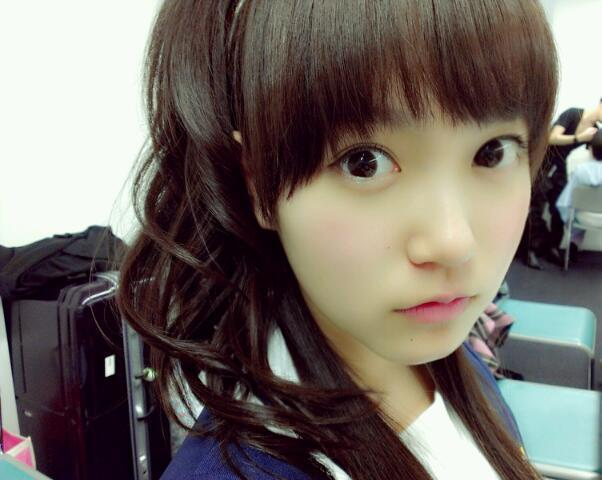

| 2013/04 06 Sat | ひめたん(*>ω<*)そ の282 |

新・幹・線 ＼(^^)／
新潟わずからのー名古屋うぃるですこんばんわー
アオーレ 一周年誕生祭！
来てくださったみなさん
ありがとうございました(ω)
朝の生放送では食レポしましたー
あのねー人生初食レポですよ。んー難しい！
来てくださった方、見てくださった方
感想はあえて聞きません。笑
アドバイスあったら こっそり教えてね←
うーんもっと上手になりたい;;
お勉強になりましたー .
ライブのセトリ
制服のマネキン
会いたかったかもしれない
涙がまだ悲しみだった頃
13日の金曜日
君の名は希望
おいでシャンプー
１年前とかと比べると持ち歌が増えたから
いろんな組み合わせがあって新鮮だね☆
今日のセトリで今日のメンバーでのライブは
最初で最後なんだろうから、そーゆー意味で
ライブ感ってのはやっぱり大切だなあと。
改めて思った１日でございました
ふへへーなんか恥ずかしいなー
このメンバーでのマネキンとか
ちょっとレアだよね(〃ω〃)
全体的にダンスナンバー多いなーと。
裏話といいますか
ここだけの話でありますが
おいシャンで ねねころ とお隣だったのね
そんで「♪待ってる〜」の時のダンスが
お隣さんと手をつないで
上げたり下げたりするってのはご存知ですかね
その時ねねころは
めちゃ頑張って手をあげるのよ
ほらーねねちっちゃいからさー
かーわーいーいーいいぃいぃぃいっ
そんで、もっと高くあげたら
どうなるんかなーとか考える私は
別にSなんかじゃないんだからねー(￣ー￣)ふっ
一緒にステージ出演されました
でんぱ組.incさん、Negiccoさん
ありがとうございました＊
乃木坂はじめてやーて方にも
あたたかく迎えていただけて幸せでした！
そして新潟名物の笹餅、柿ピーの差し入れ
ありがとうございました＊
食レポのあぶらげも美味しかったし、
あの会場だけで人生初の新潟を
めいっぱい楽しみました！
またくるね新潟ー＼(^^)／
えーさてさて
今は名古屋に向かってるんだけれども
雨がつおいね;;
今日お帰りになる方も明日お越しになる方も
どうぞみなさん気を付けて(´;ω;`)
握手会参加する予定だったけど
お天気が悪くてやむを得ず...なんて
そんな寂しいやだやだやだやだー
明日行くよって方は、よかったら教えてね☆
そんで今夜は いくちゃん と寝る予定♪

まりっかめらまん撮影
ちょっと凛々しいひめたんでお別れしましょう
あ、 まりか といっぱいお話ししたよー♪
ばーい(＊´・ω・＊)
コメント(151)
2013/04/06 23:24